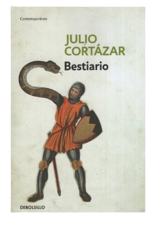

Este Libro está de oferta a unos comodos $50000 pesos, al alcance de cualquier persona y un libro que las personas han aclamado en la crítica

Libros de fantasía
Este Libro está de oferta a unos comodos $50000 pesos, al alcance de cualquier persona y un libro que las personas han aclamado en la crítica

Serie anterior a las Cronicas antedichas, escrita por el mismo autor (Rick Riordan); y segun la mayoría de gente, el nuevo Harry Potter.

Saga de libros que no necesita presentación, escrita por J.K.Rowling y una de las sagas más largas e inspiradas de "otras novelas" como El señor de los anillos y otros. Aunque a decir verdad, sigue siendo una bella forma de empezar con la lectura de liibros largos
Libros de aventura (Emocional y real)

Un absoluto clasico de la literatura, cuyo autor Robert L. Stevenson fabricó el 14 de noviembre de 1883; Es una novela clasica de piratas con el clasico abordaje y el loro en el hombro, y si bien puede llegar a ser leída por chicos pequeños sin problemas, tambien es completamente pausible para la lectura de alguien adulto.

Clasico de la literatura mitológica, creado y escrito por Homero, es un libro de origen griego que se escribió entre los años 750 a. C. y 700 a. C.; Una joya traída desde antes de nuestros tiempos modernos, hagase un favor y léalo.

La historia sigue la vida de Jean Valjean, un hombre que pasa 19 años en prisión por el simple delito de robar un trozo de pan para alimentar a su familia hambrienta. Al salir de la cárcel, el rechazo de la sociedad lo empuja a seguir delinquiendo, pero tras un acto de compasión de un obispo, decide redimirse y transformarse en un hombre de bien.A pesar de su cambio de vida y de asumir una nueva identidad, Valjean es perseguido implacablemente durante décadas por el inspector Javert, un policía rígido que cree que los criminales nunca pueden cambiar.
Libros de Julio Cortázar

La sucesión de cuentos en la que se basa este libro nos muestra la vida de diversos cronopios y famas, criaturas humanas con un enfoque peculiar para observar el mundo que los rodea, la mayoría de los lectores al cabo de unos pocos cuentos van a demostrar un favoritismo hacia alguno de los dos, aunque tambien se da el improbable caso de una duda constante,esperemos puedad disfrutar esta belleza de libro, con agregados cpmp por ej: Como subir una escalera, que son obras de arte en estado puro.

Las armas secretas (El cuento que da título al libro)Sigue a Pierre y Michèle, una joven pareja en el París de posguerra. Tienen una relación extraña porque ella evita la intimidad física. A medida que avanza el relato, Pierre experimenta extraños delirios, pensamientos y hábitos que no siente como propios. El trasfondo fantástico sugiere un desdoblamiento de personalidad o posesión: el alma de un soldado alemán que violó a Michèle en el pasado parece apoderarse de Pierre para repetir el crimen, convirtiendo los traumas del pasado en las "armas secretas" que destruyen el presente... Así como El perseguidor, Cartas de mamá, Las babas del diablo y los buenos servicios.

Bestiario es el primer libro de cuentos de Julio Cortázar, compuesto por ocho relatos que combinan lo cotidiano con lo sobrenatural y lo absurdo, explorando la psicología de los personajes y la tensión entre lo real y lo fantástico.